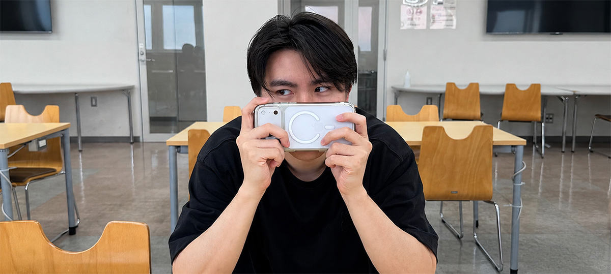
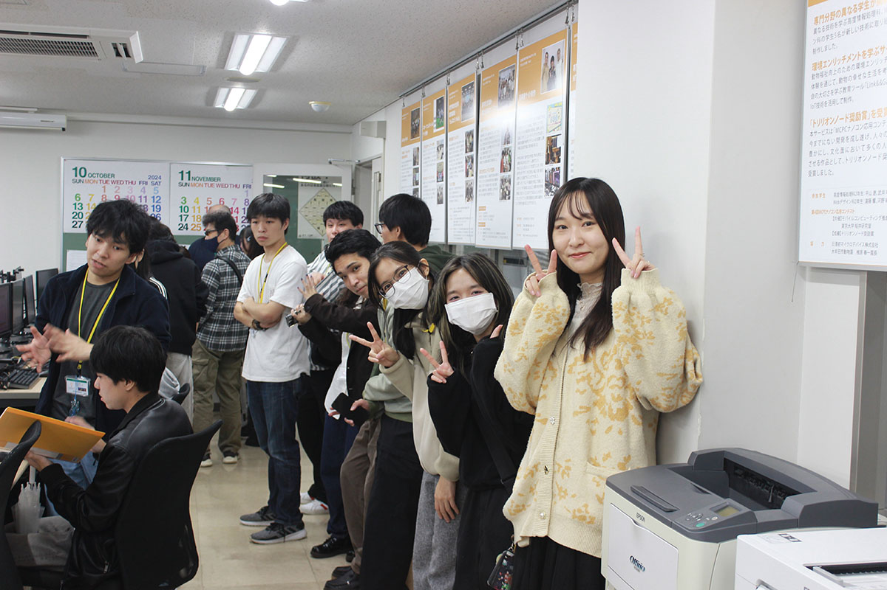
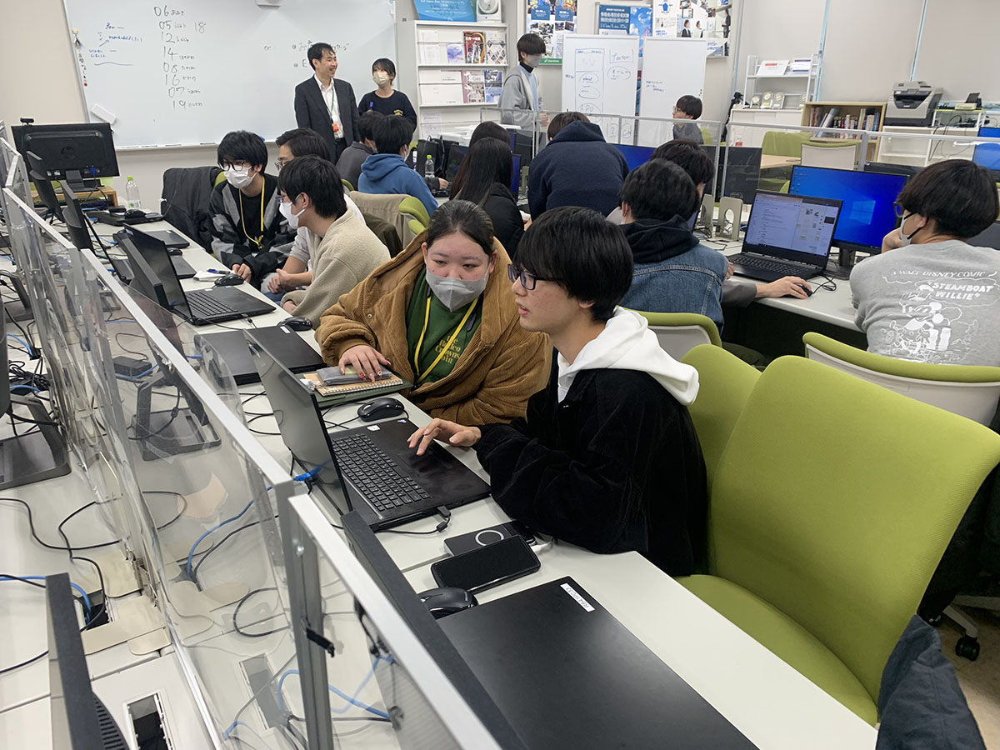
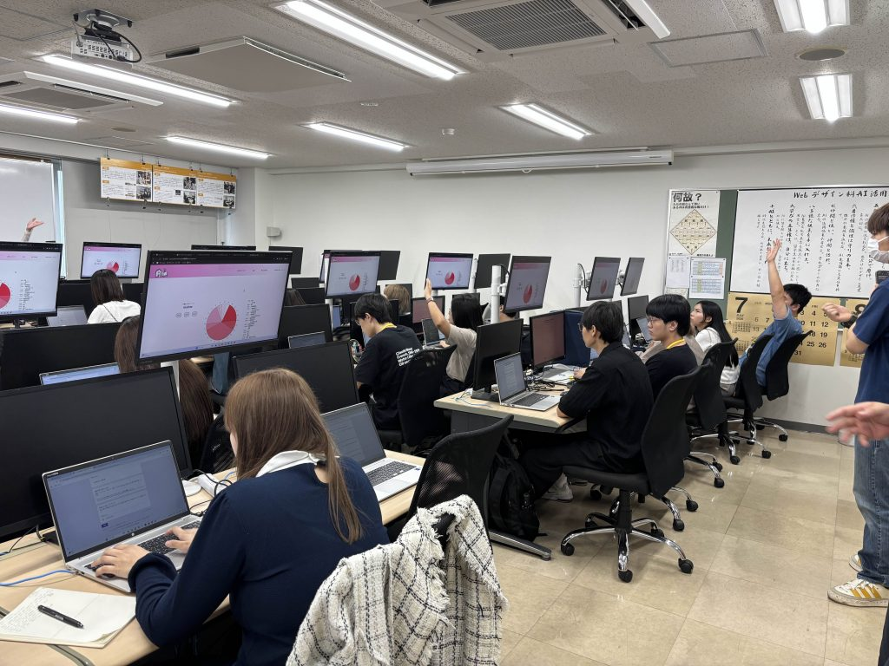

実は、特別な理由や大きな夢があったわけではありません。
ただ、いろいろな国や性格の人たちと意見を交換できる
環境が面白そうだと思って、この学科を選びました。


やっぱりJavaScriptの授業です。
課題を終わらせるのにかなり時間がかかりましたし、
先生にコードの内容を説明する機会も多くて、
とても印象に残っています。
一番成長したと感じるのは、考え方と気持ちの切り替えです。
以前は、自分の意見を否定されるとイライラしたり、
「なんで分かってもらえないんだろう」と思っていました。
でも今は、「どこがまだ足りなかったんだろう」と考えて改善できるようになりました。


1年生の頃は、みんな本当に仲が良くて和気あいあいとしていました。
でも2年生になってグループ制作が始まると、グループ同士がお互いに「他のチームは何を作っているんだろう?」と探り合っていて、まるでスパイ映画みたいな雰囲気になることもあります。（笑）